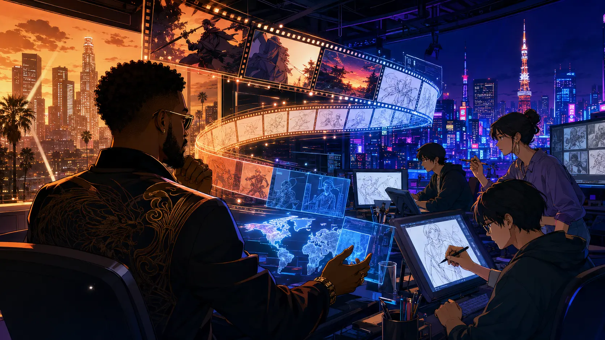
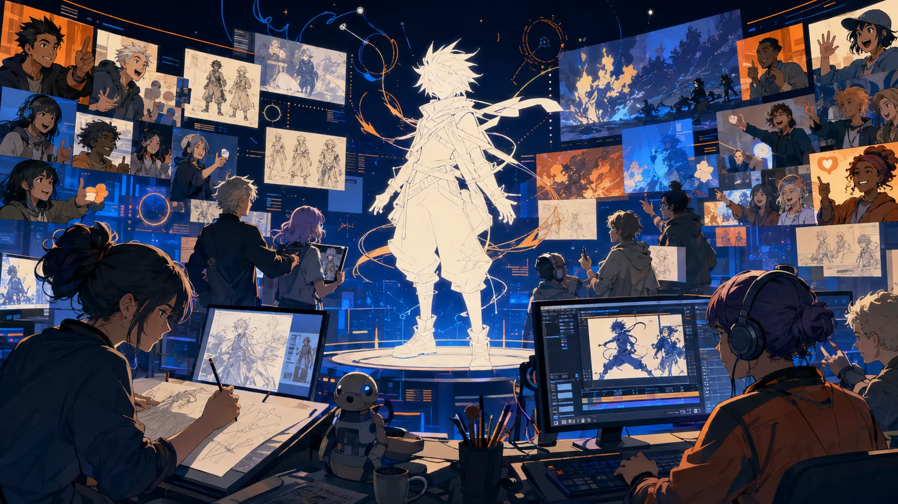
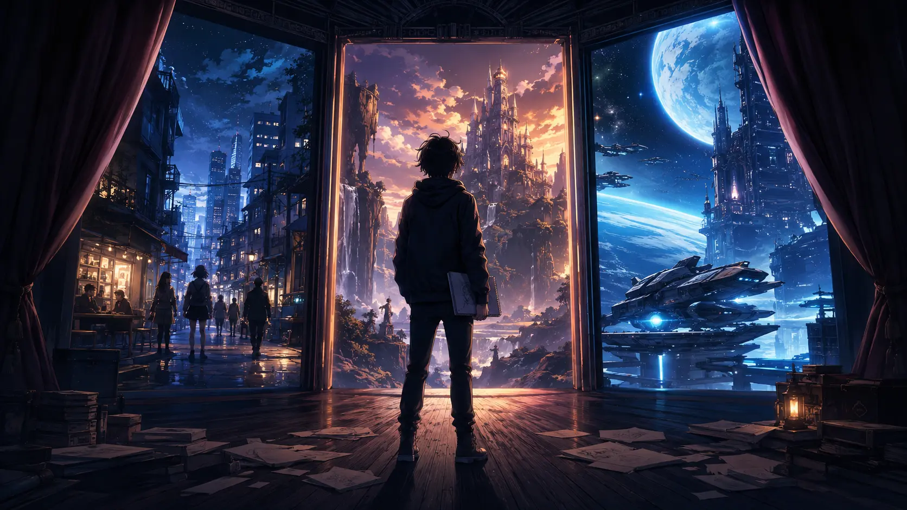

OLD MAN OTAKU / ANIME INDUSTRY • AUGUST 1, 2026
Will Smith's Westbrook Is Building an Anime Pipeline—But Its First Production Remains a Mystery
The confirmed story is bigger than a celebrity cameo and more complicated than “Will Smith is making an anime.” Westbrook has joined Studio Azuki to develop original properties and adaptations for a worldwide audience. What it has not revealed is the show.

Will Smith is entering the anime business, but not in the way a quick headline might make it sound.
In July 2025, Westbrook Inc.—the entertainment company founded by Will Smith, Jada Pinkett Smith, Miguel Melendez and Ko Yada—announced a strategic partnership with the newly formed Studio Azuki. The companies said they would identify, develop, produce and distribute anime for global audiences. The scope includes original intellectual property as well as adaptations, with projects potentially ranging from short-form digital releases to television and theatrical work.
That is a meaningful industry move. It is not, however, confirmation that Smith will voice a lead character, write a series, direct an episode or appear in a live-action adaptation. As of August 1, 2026, the partnership still has no publicly announced first title, cast, director, release date or distribution home.
The accurate story is therefore not “Will Smith has an anime.” It is that Westbrook is helping build a route through which anime projects could move from creator communities and Japanese production teams into Hollywood financing, talent and global distribution.
What exactly is Studio Azuki?
Studio Azuki is a United States-based joint venture bringing together Azuki, Comisma and Xenotoon. Each partner fills a different piece of the production puzzle.
Azuki contributes a large digital fan community, online marketing experience and an experimental approach to audience participation. The brand began in the NFT and Web3 space, then expanded its anime ambitions through projects such as the Enter the Garden anthology, Anime.com and its connection to the Animecoin ecosystem.
Comisma provides Japanese manga-publishing experience. It operates the GANMA! manga platform and owns Qzil.la, an animation studio positioned around high-end production. That gives the partnership access to story development, creators and a pipeline rooted in Japan rather than merely borrowing the visual language of anime from a distance.
Xenotoon brings 2D and 3D animation capabilities. Its experience spans flexible short-form work and larger productions, which matters for a studio promising to make both social-native material and conventional film or television projects.
Westbrook is the bridge to the larger international entertainment machine: development experience, recognizable talent relationships, marketing muscle, financing connections and access to global buyers. Studio Azuki can help make the work; Westbrook can help package it, amplify it and place it in front of distributors.
Why the partnership is not simply “Hollywood anime”
Western entertainment companies have spent years pursuing anime audiences, sometimes by licensing Japanese work and sometimes by producing projects that are described as anime-inspired. Studio Azuki is attempting a more integrated model.
Two of its founding companies are Japanese businesses with direct experience in manga and animation production. That does not automatically guarantee cultural authenticity or creative success, but it does distinguish the venture from a Hollywood company commissioning a visual imitation after the creative decisions have already been made.
The plan is international from the development stage. Instead of making a property for one territory and treating worldwide distribution as an extra step, the partners want projects designed to travel from the beginning. That could affect character design, episode length, release format, marketing and even how a project is financed.

The promise—and controversy—of “Anime 2.0”
Studio Azuki describes its strategy as “Anime 2.0.” Behind the futuristic label is an effort to make anime development more global, creator-centered, socially connected and open to alternative funding models.
The most interesting part is the attempt to shorten the distance between creators and audiences. Social-first animation can test ideas quickly. Online communities can help an original property find an audience before a full season is financed. Independent creators may gain routes into professional production that do not begin with the traditional studio gatekeepers.
The most controversial part is the Web3 infrastructure. Azuki grew from an NFT brand and remains connected to blockchain-based ownership, participation and financing experiments. Supporters see a possible way for creators and fans to share more directly in the value of an intellectual property. Skeptics see speculation, unstable incentives and a technology layer that can distract from the animation itself.
Both reactions are reasonable. The editorial distinction is important: the companies are presenting blockchain as part of the production, community and financing system—not necessarily as the subject of the anime. A fantasy series created through a Web3-backed model would not automatically be a story about crypto any more than a crowdfunded movie must be a movie about crowdfunding.
The real test will be practical. Do creators keep meaningful control? Are fan-participation promises more than marketing? Does the production schedule protect artists? Is the finished anime strong enough to matter after the novelty wears off? “Anime 2.0” will ultimately be judged by the work on screen, not by the technology in the pitch deck.
How involved is Will Smith personally?
The agreement belongs to Westbrook as a company. Smith’s name gives the partnership immediate visibility, but no announcement has assigned him a creative or performance role. There is no confirmed Smith voice role, screenplay, directorial assignment or lead character based on him.
His potential value is still substantial. A globally recognized entertainer can attract meetings, talent and media attention that a young studio would struggle to secure alone. Westbrook also brings a track record across film, television and digital media. That expertise could help an online concept become a conventional series or feature instead of remaining a promising collection of artwork and community posts.
Claims about Smith’s personal list of favorite anime should be treated cautiously unless they can be traced to a direct interview. There are indirect connections: he starred in Bright, which later received the Japanese animated spinoff Bright: Samurai Soul, while Jaden Smith voiced the lead in the anime-influenced series Neo Yokio. Those projects show proximity to anime, not proof of Will Smith’s personal viewing habits or creative control over Studio Azuki.
What could the first project look like?
The partnership leaves several doors open. A short, social-first series would let Studio Azuki demonstrate its community model quickly and at a smaller scale. A television project would test whether the production partners can sustain longer storytelling and consistent animation. A theatrical feature would make the loudest statement but also demand the greatest financing, scheduling and distribution commitment.
An original property may be the clearest proof of concept because it would show what the companies can build together from the ground up. An adaptation could arrive with a ready-made audience and a more obvious commercial path. The public agreement allows for both.
Enter the Garden offers a glimpse of Azuki’s creative world and predates the Studio Azuki partnership, but it should not be mislabeled as a Will Smith or Westbrook production. Until a new title is formally attached to the partnership, it remains an example of Azuki’s earlier anime direction—not the mystery project itself.

Why this could matter beyond one celebrity partnership
Westbrook brings something many young anime ventures do not have: direct access to mainstream entertainment relationships and a global promotional platform. Studio Azuki brings something Hollywood partnerships sometimes lack: Japanese manga-development experience, animation infrastructure and an existing online community that already thinks in anime-native terms.
If the model works, it could create more projects developed simultaneously for Japan, the United States and the wider world. It could also create opportunities for Black creators, actors and culturally diverse protagonists to enter anime through a production pipeline that includes Japanese partners instead of treating diversity as an after-market adjustment.
That possibility is exciting, but it is not guaranteed. International collaboration can broaden a medium; it can also flatten cultural differences when marketing decisions overpower creative ones. Fan participation can open doors; it can also become a popularity contest. Alternative financing can support artists; it can also introduce new forms of pressure.
For now, the smartest response is cautious interest. The partnership is real. Its ambition is clear. Its first creative test remains hidden.
The Old Man Otaku take
The celebrity name gets the click, but the pipeline is the actual story.
Westbrook does not need Will Smith standing in a recording booth for this partnership to matter. If the company can help original anime creators reach serious financing and worldwide distribution—while Comisma and Xenotoon keep the production grounded in real manga and animation expertise—the result could be more valuable than a star cameo.
But the word “could” is carrying a lot of weight. Until there is a title, a creative team and footage, “Anime 2.0” is still a promise. The first project must prove that the partnership can create a memorable story, protect the people making it and offer fans something deeper than a new ownership model.
Westbrook has not announced its anime hero yet. It has announced the road that hero may travel.